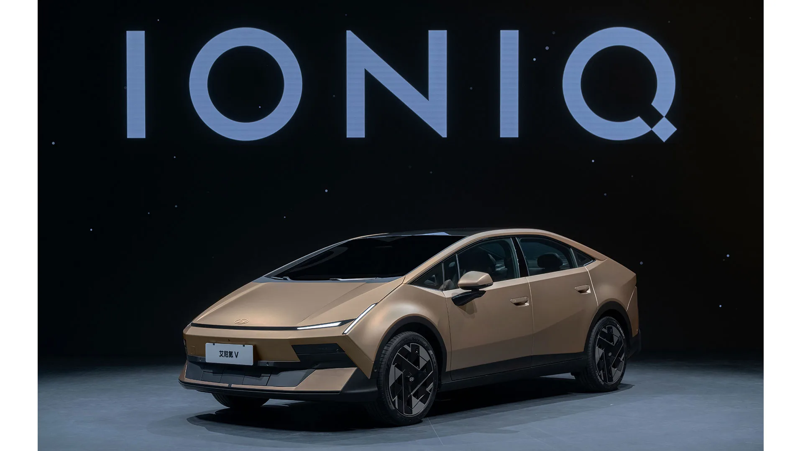
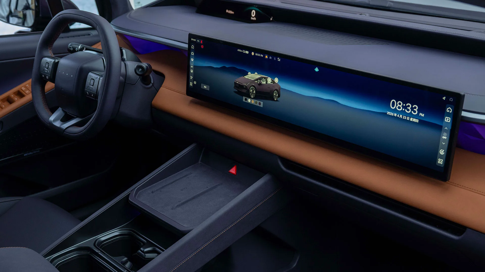
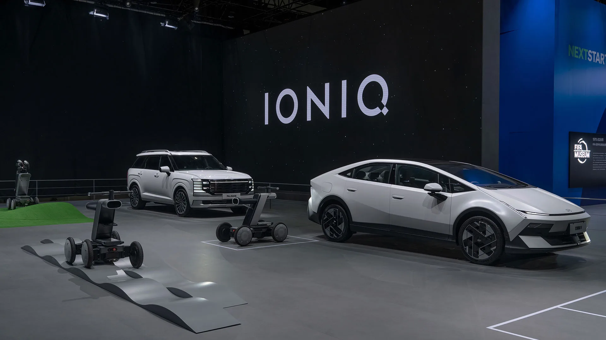
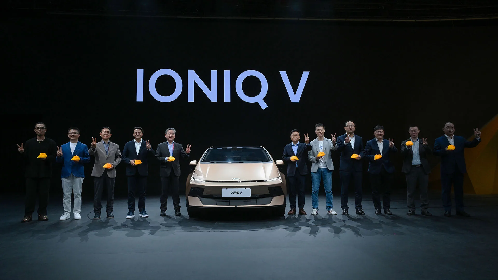

▲ 현대차가 중국 시장 전용으로 개발한 전기 세단 아이오닉 V — 2026년 8월 청두모터쇼에서 11만 9,900위안부터 사전판매를 시작했다 ⓒ Hyundai Motor Group
"그랜저 절반 값에 27인치 화면 단 전기차, 정작 한국에서는 살 수 없다." 현대차가 2026년 4월 베이징 국제모터쇼에서 공개하고 8월 청두모터쇼에서 사전판매를 시작한 중국 전용 전기 세단 아이오닉 V가 국내 자동차 커뮤니티에서 화제다. 2,400만~2,900만원대에 800V 급속충전과 대형 디스플레이를 갖춘 이 차가 정작 한국 땅은 밟기 어려운 이유는 무엇일까.
1. 아이오닉 V란 무엇인가 — 중국 시장을 위해 태어난 전기 세단
아이오닉 V는 베이징현대(현대차와 BAIC의 중국 합작법인)가 중국 시장만을 위해 처음부터 새로 개발한 전기차다. 현대차그룹 공식 발표에 따르면 이 차는 "중국 시장을 위해 특별히 설계된 첫 번째 아이오닉 전용 생산 모델"로, 2026년 4월 베이징 국제모터쇼에서 세계 최초로 공개되며 현대차의 전기차 전용 브랜드 '아이오닉'의 중국 공식 론칭을 알렸다.
차체는 SUV가 아니라 패스트백 형태의 준중형~중형급 전기 세단이다. 현대차가 중국 전용 전기차 라인업에 새로 적용한 디자인 언어 'The Origin'을 처음 입힌 모델로, 단일 곡선으로 이어지는 실루엣, 프레임리스 도어, 플러시 도어 손잡이, 플로팅 사이드미러 등 콘셉트카에 가까운 디테일을 양산차에 그대로 반영한 점이 특징이다.
현대차와 BAIC그룹은 베이징현대에 80억 위안(약 1조 7,300억원)을 공동 투자하기로 했으며, 베이징현대의 연간 판매 50만대 회복을 목표로 향후 5년간 중국 시장에 20종의 신모델을 순차 투입할 계획이다. 아이오닉 V는 이 공세의 '1번 타자'로, 2027년 상반기에는 SUV 형태의 후속 모델('Earth' 콘셉트 기반)도 추가로 나올 예정이다. 2022년 25만대 안팎이었던 베이징현대 판매량이 2024년에는 15만대 안팎까지 줄어든 상황에서, 아이오닉 V는 중국 시장 반등을 위한 승부수인 셈이다.
2. 가격과 제원 — '2천만 원대 전기차'의 실체
아이오닉 V의 중국 사전판매 가격은 11만 9,900위안부터 시작한다. 오토트리뷴은 이를 원화 약 2,387만원으로 환산해 보도했고, 카피아는 같은 시작가를 약 2,472만원으로 환산했다 — 환율 적용 시점에 따라 수치가 다소 달라질 수 있지만, 어느 쪽이든 '2천만 원대'라는 사실은 변하지 않는다. 중국 청두모터쇼에서 공개된 트림별 가격은 다음과 같다.
| 트림 | 원화 환산 가격 | 배터리 | CLTC 주행거리 |
|---|---|---|---|
| 540 Max | 약 2,472만원 | 53.5kWh LFP | 520~540km |
| 540 Max+ | 약 2,678만원 | 53.5kWh LFP | 520~540km |
| 650 Max+ | 약 2,974만원 | 66.8kWh LFP | 620~650km |
📍 중국 가격을 국내 가격과 직접 비교할 수 없는 이유
위 금액은 어디까지나 중국 현지 사전판매 가격을 원화로 단순 환산한 수치다. 관세, 물류비, 국내 인증·안전기준 대응 비용, 딜러 마진 등이 전혀 반영되지 않았고, 배터리 인증 방식(CLTC vs 국내 인증)도 달라 실제 국내 출시 시 가격과 주행거리는 이 수치와 크게 달라질 수 있다.
제원 면에서는 전장 4,900mm · 전폭 1,890mm · 전고 1,470mm · 휠베이스 2,900mm로 준중형~중형 세단 체급이다. 모터는 싱글 구성으로 188마력(140kW) 또는 225마력(168kW)을 낸다. 전 트림이 800V 아키텍처 기반 급속충전을 지원하며, 전비는 중국 기준 100km당 11.1kWh 수준이다.
| 항목 | 내용 |
|---|---|
| 차체 형식 | 패스트백(리프트백) 세단 |
| 전장 × 전폭 × 전고 | 4,900 × 1,890 × 1,470mm |
| 휠베이스 | 2,900mm |
| 배터리 | CATL 리튬인산철(LFP) 53.5kWh / 66.8kWh |
| 모터 출력 | 188마력(140kW) / 225마력(168kW), 싱글모터 |
| 충전 아키텍처 | 800V, 전 트림 급속충전 지원 |
| 인포테인먼트 | 27형 4K 파노라믹 디스플레이 + 11.98형 헤드업 디스플레이, 퀄컴 스냅드래곤 8295 |
| 운전자 보조 | 모멘타(Momenta)와 공동 개발한 첨단 주행보조 기술 |
| 공차중량 | 약 1,707~1,808kg(트림별 상이) |
3. 실내 첨단 사양 — 27인치 화면과 LLM 기반 AI 비서
아이오닉 V의 가장 큰 화제는 실내를 채운 27인치 4K 파노라믹 디스플레이다. 여기에 11.98인치 헤드업 디스플레이가 더해져 운전석 시야 전체가 스크린으로 둘러싸인 느낌을 준다. 프로세서는 퀄컴 스냅드래곤 8295가 맡았고, 바이두의 어니봇(Ernie Bot)과 바이트댄스의 더우바오(Doubao) 등 두 종의 대형언어모델(LLM)을 결합한 스마트 AI 어시스턴트가 탑재돼 자연어로 차량을 제어할 수 있다.

▲ 아이오닉 V 실내 — 27형 4K 파노라믹 디스플레이가 대시보드를 가로지른다 ⓒ Hyundai Motor Group
앞좌석 레그룸 1,078mm, 2열 레그룸 1,019mm로, 전장이 135mm 더 긴 준대형 세단 그랜저(휠베이스 2,895mm)에 맞먹는 실내 공간을 확보했다는 점도 강조됐다. 안전 사양으로는 9개 에어백, 35.7m 제동거리, 다단계 프리텐셔너 안전벨트 등이 포함됐다. 자율주행 보조 기술은 중국 자율주행 스타트업 모멘타와 공동 개발했는데, 이는 국내에서 익숙한 현대모비스·현대차 자체 개발 ADAS와는 다른 공급망이다.
✅ 아이오닉 V 핵심 사양 체크
· 27형 4K 파노라믹 디스플레이 + 11.98형 HUD — 국내 판매 중인 현대차 라인업에도 아직 없는 크기
· CATL LFP 배터리 + 800V 아키텍처 조합으로 가격과 충전속도를 동시에 확보
· LLM 기반 AI 비서와 모멘타 협력 ADAS는 중국 시장 전용 소프트웨어·하드웨어 스택
· 실내 레그룸 확장(앞 1,078mm/뒤 1,019mm)으로 세단이지만 준대형급 거주성 표방
4. 국내 출시를 막는 결정적 변수 — 노사 협약부터 라인업 중복까지
아이오닉 V가 국내에 들어오기 어려운 가장 근본적인 이유는 생산지에 있다. 이 차는 중국 베이징 공장에서만 생산된다. 현대차 노사 단체협약에는 해외 공장에서 만든 완성차를 국내에 들여와 판매하려면 노사공동위원회의 합의가 필요하다는 조항이 있다. 실제로 과거 체코·유럽 공장에서 생산된 i30 N과 씨드(cee'd)를 국내에 들여오려던 시도가 노조 반발로 무산된 전례가 있다.
| 모델 | 국내 판매가(세제 혜택 후) | 비고 |
|---|---|---|
| 기아 EV3 에어 스탠다드 | 약 3,995만원 | 준중형 전기 SUV |
| 현대 코나 일렉트릭 스탠다드 | 약 4,152만원 | 소형 전기 SUV |
| 현대 아이오닉5 스탠다드 | 약 4,740만원 | 중형 전기 SUV |
| 아이오닉 V (중국 환산가, 참고용) | 약 2,472만~2,974만원 | 중국 가격 단순 환산, 국내가 아님 |
표에서 보듯, 아이오닉 V의 중국 환산가는 코나 일렉트릭·EV3보다 1,000만원 이상 낮다. 관세와 인증 비용 등을 더해도 상당한 가격 우위가 남을 가능성이 있는데, 이는 오히려 국내 출시를 더 어렵게 만드는 요인이기도 하다. 현대차 입장에서는 자사가 심혈을 기울여 국내 생산 중인 코나 일렉트릭·아이오닉5·아이오닉6와 직접 경쟁하는 저가 모델을 스스로 들여올 이유가 마땅치 않다. 여기에 배터리 공급망(CATL LFP)과 중국산 완성차라는 점에 대한 국내 소비자들의 인식, 부품·AS 체계 이원화 문제까지 겹치면 출시 장벽은 한층 높아진다. 아이오닉 V는 베이징현대가 중국 파트너와 함께 개발한 현지 전용 플랫폼을 기반으로 하는데, 이는 국내 판매 중인 아이오닉5·6·코나 일렉트릭이 쓰는 E-GMP 플랫폼과는 별개다. 부품 호환성이 없다는 뜻이어서, 설령 국내 출시가 결정되더라도 별도의 정비 인프라와 부품 조달 체계를 새로 구축해야 한다.

▲ 베이징모터쇼 현대차 전시장 — 아이오닉 V(오른쪽, 팰리세이드와 나란히 전시)는 향후 5년간 중국에 투입될 20종 신모델의 시작점이다 ⓒ Hyundai Motor Group
5. 국내 출시 가능성 전망 — 청원은 뜨겁지만 현실은 냉정하다
국내 자동차 커뮤니티에서는 아이오닉 V의 디자인과 대형 디스플레이에 대한 호감을 바탕으로 국내 출시를 요구하는 목소리가 이어지고 있다. "아반떼·쏘나타급 전기차 수요를 흡수할 수 있다"는 기대도 나온다. 그러나 업계 전망은 신중하다. 아이오닉 V는 기획 단계부터 중국 시장 전용으로 설계됐고, 국내에는 이미 아이오닉6라는 중형 전기 세단이 존재하는 만큼 동일 세그먼트 내 제 살 깎아먹기가 될 수 있다는 지적이다.
다만 완전한 가능성 부재는 아니다. 만약 국내 출시가 이뤄진다면 중국 사양을 그대로 들여오기보다 가격 정책만 참고해 국내 생산 모델로 재설계하는 방식이 유력하게 거론된다. 코나 일렉트릭과 EV3 사이 빈 가격대를 메우는 보급형 전기 세단으로 포지셔닝한다면, 현대차 전기 SUV·세단 가격 체계 전반을 재편할 잠재력이 있다는 평가다. 다음 관전 포인트는 2027년 상반기 공개 예정인 SUV 후속 모델('Earth' 콘셉트 기반)이 중국 밖 시장으로 확장될지 여부다.

▲ 아이오닉 V 공개 행사 — 현대차와 베이징현대 관계자들이 무대에 올라 중국 시장 공략 의지를 밝혔다 ⓒ Hyundai Motor Group
아이오닉 V의 공식 사양과 최신 소식은 현대차그룹 뉴스룸에서 확인할 수 있다. 현대차그룹 공식 뉴스룸 바로가기
6. 요약
아이오닉 V는 베이징현대가 중국 시장만을 위해 개발한 전기 세단으로, 2026년 4월 베이징모터쇼에서 공개돼 8월 청두모터쇼에서 11만 9,900위안(약 2,400만~2,500만원)부터 사전판매를 시작했다. CATL LFP 배터리, 800V 급속충전, 27형 4K 파노라믹 디스플레이 등 가격 대비 파격적인 사양을 갖췄다.
국내 출시를 막는 가장 큰 변수는 해외생산 차량 역수입에 필요한 노사공동위원회 합의, 그리고 이미 포화 상태인 국내 전기차 라인업(코나 일렉트릭·EV3·아이오닉5·6)과의 가격·세그먼트 중복이다. 아이오닉 V의 중국 환산가는 국산 경쟁 모델보다 1,000만원 이상 낮아, 현대차 입장에서도 자사 라인업을 스스로 잠식할 이유가 크지 않다.
소비자 청원은 뜨겁지만 단기간 내 국내 출시 가능성은 낮다는 것이 업계의 중론이다. 다만 향후 가격 정책이나 포지셔닝을 참고해 국내 생산 파생 모델이 나올 가능성은 열려 있으며, 2027년 상반기 공개될 SUV 후속 모델의 시장 확장 여부가 다음 관전 포인트로 꼽힌다.